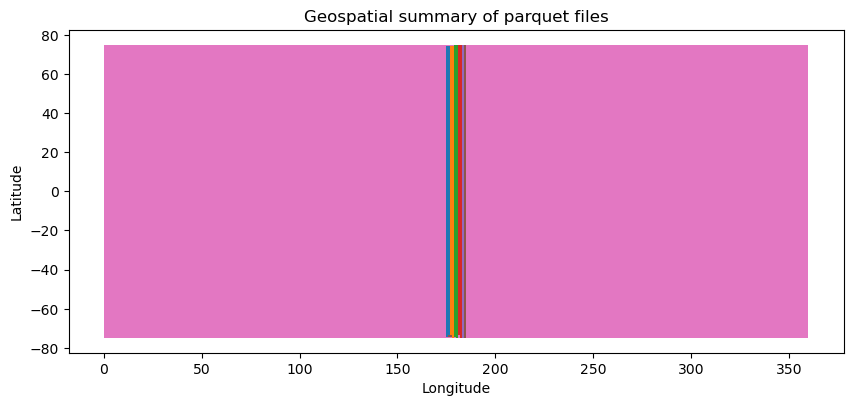
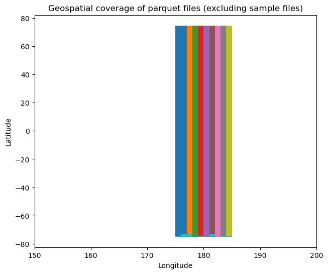
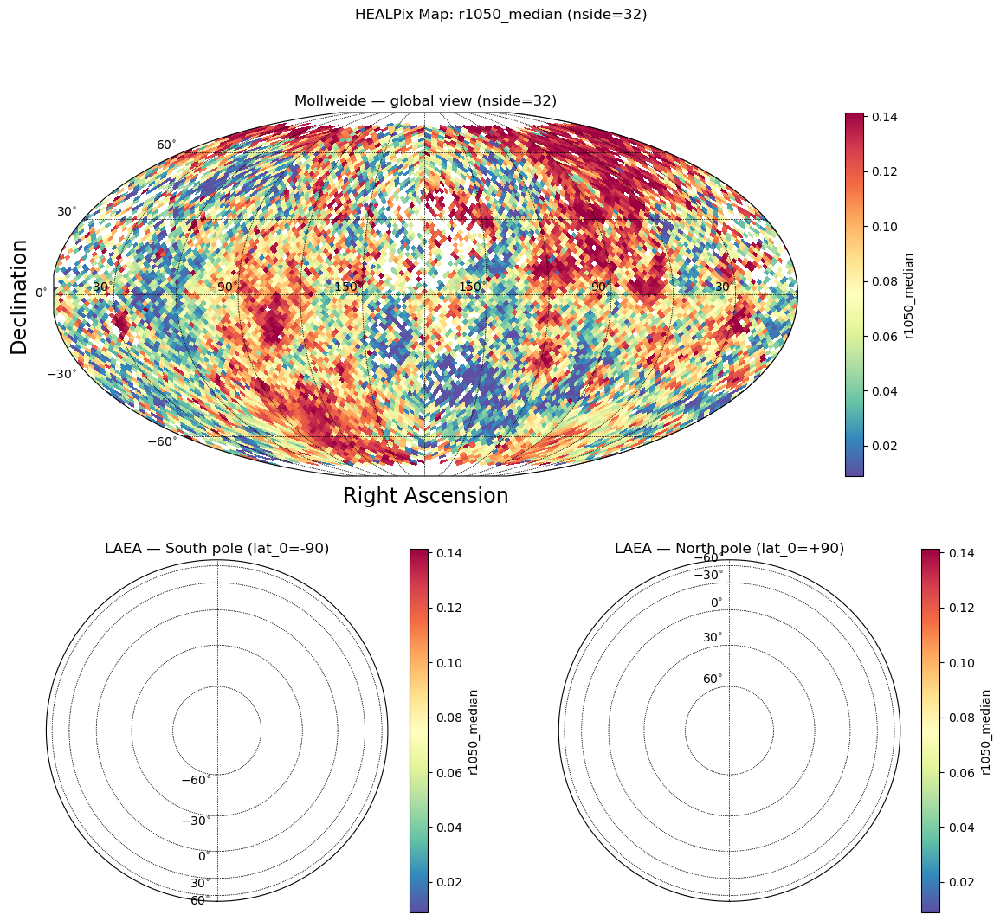

import healpyxel
from healpyxel import core
import pandas as pd
import numpy as np
print(f"healpyxel version: {healpyxel.__version__}")healpyxel version: 0.1.0Import the healpyxel package and core utilities:
import healpyxel
from healpyxel import core
import pandas as pd
import numpy as np
print(f"healpyxel version: {healpyxel.__version__}")healpyxel version: 0.1.0Check available test data in the package:
from pathlib import Path
# Look for test data
test_data_dir = Path('../test_data')
if test_data_dir.exists():
print("Test data directory found!")
print(f"\nContents:")
for item in sorted(test_data_dir.iterdir()):
if item.is_file():
size_mb = item.stat().st_size / 1024 / 1024
print(f" {item.name}: {size_mb:.2f} MB")
elif item.is_dir():
n_files = len(list(item.glob('*')))
print(f" {item.name}/: {n_files} files")
else:
print("Test data directory not found. Run create_test_data.sh to generate test data.")Test data directory found!
Contents:
README.md: 0.00 MB
batches/: 10 files
derived/: 1 files
regions/: 0 files
samples/: 3 files
validation/: 2 filesIf test data is available, let’s try a quick aggregation:
# Check for sample data
sample_file = test_data_dir / 'samples/sample_50k.parquet'
if sample_file.exists():
print(f"Loading sample: {sample_file.name}")
df = pd.read_parquet(sample_file)
print(f"\nShape: {df.shape}")
print(f"\nColumns: {list(df.columns)}")
print(f"\nFirst few rows:")
display(df.head())
# Check for lat/lon columns
if 'latitude' in df.columns and 'longitude' in df.columns:
print(f"\n✓ Found latitude/longitude columns for HEALPix conversion")
print(f" Lat range: [{df['latitude'].min():.2f}, {df['latitude'].max():.2f}]")
print(f" Lon range: [{df['longitude'].min():.2f}, {df['longitude'].max():.2f}]")
else:
print("Sample data not found. Generate test data first:")
print(" cd .. && bash create_test_data.sh")Loading sample: sample_50k.parquet
Shape: (50000, 61)
Columns: ['ref_id', 'a', 'b', 'c', 'd', 'e', 'f', 'g', 'h', 'i', 'j', 'k', 'l', 'm', 'n', 'o', 'p', 'q1', 'q2', 'q3', 'q4', 'obs_id', 'vis_slope', 'nir_slope', 'visnir_slope', 'norm_vis_slope', 'norm_nir_slope', 'norm_visnir_slope', 'curvature', 'norm_curvature', 'uv_downturn', 'color_index_310_390', 'color_index_415_750', 'color_index_750_415', 'color_index_750_950', 'r310', 'r390', 'r750', 'r950', 'r1050', 'r1400', 'r415', 'r433_2', 'r479_9', 'r556_9', 'r628_8', 'r748_7', 'r828_4', 'r898_8', 'r996_2', 'spot_number', 'lat_center', 'lon_center', 'surface', 'width', 'length', 'ang_incidence', 'ang_emission', 'ang_phase', 'azimuth', 'geometry']
First few rows:| ref_id | a | b | c | d | e | f | g | h | i | ... | lat_center | lon_center | surface | width | length | ang_incidence | ang_emission | ang_phase | azimuth | geometry | |
|---|---|---|---|---|---|---|---|---|---|---|---|---|---|---|---|---|---|---|---|---|---|
| 0 | 1310408274001158 | 0 | 1 | 1 | 1 | 9 | 1 | 1 | 0 | 0 | ... | 5.186568 | 272.40450 | 1567133.40 | 1006.63727 | 1982.1799 | 43.049232 | 34.814793 | 77.85916 | 109.019295 | b'\x01\x03\x00\x00\x00\x01\x00\x00\x00\x05\x00... |
| 1 | 1335313413800913 | 0 | 0 | 0 | 0 | 9 | 1 | 1 | 0 | 0 | ... | -60.939438 | 71.77686 | 13564574.00 | 4064.49850 | 4249.2210 | 64.178116 | 37.690910 | 101.84035 | 111.930336 | b'\x01\x03\x00\x00\x00\x01\x00\x00\x00\x05\x00... |
| 2 | 1224306405800836 | 0 | 2 | 2 | 2 | 9 | 1 | 1 | 0 | 0 | ... | 5.613894 | 54.23045 | 1755143.50 | 1013.51886 | 2204.9104 | 53.815990 | 24.053764 | 77.86254 | 99.559425 | b'\x01\x03\x00\x00\x00\x01\x00\x00\x00\x05\x00... |
| 3 | 1421301274400732 | 0 | 1 | 1 | 1 | 9 | 1 | 1 | 0 | 0 | ... | -41.672714 | 324.49740 | 23309360.00 | 6511.20950 | 4558.0470 | 52.841824 | 46.625698 | 99.40995 | 121.833626 | b'\x01\x03\x00\x00\x00\x01\x00\x00\x00\x05\x00... |
| 4 | 1310308273500668 | 0 | 0 | 0 | 0 | 9 | 1 | 1 | 0 | 0 | ... | 26.975400 | 284.81708 | 905292.56 | 480.38028 | 2399.4622 | 56.780300 | 21.083624 | 77.85945 | 97.433360 | b'\x01\x03\x00\x00\x00\x01\x00\x00\x00\x05\x00... |
5 rows × 61 columns
import duckdb
from math import isnan
import pathlib
stats = []
# reuse/clear existing stats list
stats.clear()
# print("\nInspecting all parquet files in test data directory and collecting lat/lon stats:")
for parquet_file in test_data_dir.rglob('*.parquet'):
size_mb = parquet_file.stat().st_size / 1024 / 1024
rel = parquet_file.relative_to(test_data_dir)
try:
q = (
f"SELECT COUNT(*) AS n_rows, "
f"MIN(lat_center) AS lat_min, MAX(lat_center) AS lat_max, "
f"MIN(lon_center) AS lon_min, MAX(lon_center) AS lon_max "
f"FROM read_parquet('{parquet_file.as_posix()}')"
)
n_rows, lat_min, lat_max, lon_min, lon_max = duckdb.query(q).fetchone()
except Exception:
# If lat_center/lon_center missing or another error, still try to get row count
try:
n_rows = duckdb.query(f"SELECT COUNT(*) FROM read_parquet('{parquet_file.as_posix()}')").fetchone()[0]
except Exception:
n_rows = None
lat_min = lat_max = lon_min = lon_max = None
stats.append({
"file": str(rel),
"size_mb": size_mb,
"n_rows": n_rows,
"lat_min": lat_min,
"lat_max": lat_max,
"lon_min": lon_min,
"lon_max": lon_max,
})
# print(f" {rel}: {size_mb:.2f} MB, {n_rows} rows")
# Aggregate into a dataframe and display
df_stats = pd.DataFrame(stats)
df_stats['filename'] = df_stats['file'].apply(lambda x: pathlib.Path(x).stem)
display(df_stats)| file | size_mb | n_rows | lat_min | lat_max | lon_min | lon_max | filename | |
|---|---|---|---|---|---|---|---|---|
| 0 | samples/sample_50k.parquet | 18.891136 | 50000 | -74.986440 | 74.946884 | 0.020273 | 359.96555 | sample_50k |
| 1 | samples/sample_5k.parquet | 1.941895 | 5000 | -74.954390 | 74.846540 | 0.274960 | 359.80890 | sample_5k |
| 2 | samples/sample_25k.parquet | 9.614980 | 25000 | -74.934560 | 74.767715 | 0.057941 | 359.97324 | sample_25k |
| 3 | derived/cli_quickstart/sample_50k.cell-healpix... | 0.430335 | 54931 | NaN | NaN | NaN | NaN | sample_50k.cell-healpix_assignment-fuzzy_nside... |
| 4 | derived/cli_quickstart/sample_50k-aggregated.c... | 0.552613 | 12288 | NaN | NaN | NaN | NaN | sample_50k-aggregated.cell-healpix_assignment-... |
| 5 | derived/cli_quickstart/sample_50k-aggregated.c... | 1.302203 | 49152 | NaN | NaN | NaN | NaN | sample_50k-aggregated.cell-healpix_assignment-... |
| 6 | derived/cli_quickstart/sample_50k.cell-healpix... | 0.525922 | 59592 | NaN | NaN | NaN | NaN | sample_50k.cell-healpix_assignment-fuzzy_nside... |
| 7 | validation/high_quality_subset.parquet | 9.039313 | 25121 | -74.992330 | 74.683150 | 175.000180 | 184.99979 | high_quality_subset |
| 8 | validation/combined_batch_001_003.parquet | 3.963343 | 10890 | -74.627014 | 74.447170 | 175.000180 | 177.99991 | combined_batch_001_003 |
| 9 | batches/batch_009.parquet | 1.613665 | 4417 | -74.822310 | 74.647300 | 183.000080 | 183.99973 | batch_009 |
| 10 | batches/batch_003.parquet | 1.373512 | 3734 | -73.450960 | 74.447170 | 177.000500 | 177.99991 | batch_003 |
| 11 | batches/batch_007.parquet | 1.530362 | 4174 | -73.332790 | 74.656006 | 181.000610 | 181.99995 | batch_007 |
| 12 | batches/batch_010.parquet | 1.799953 | 4931 | -74.797844 | 74.683150 | 184.000270 | 184.99979 | batch_010 |
| 13 | batches/batch_004.parquet | 1.463505 | 3990 | -74.927130 | 74.425640 | 178.000030 | 178.99997 | batch_004 |
| 14 | batches/batch_006.parquet | 1.424916 | 3885 | -74.992330 | 74.492300 | 180.000020 | 180.99980 | batch_006 |
| 15 | batches/batch_008.parquet | 1.635924 | 4482 | -74.920740 | 74.619770 | 182.000020 | 182.99991 | batch_008 |
| 16 | batches/batch_001.parquet | 1.117513 | 3029 | -74.627014 | 74.381710 | 175.000180 | 175.99908 | batch_001 |
| 17 | batches/batch_005.parquet | 1.655387 | 4502 | -74.632195 | 74.596970 | 179.000470 | 179.99990 | batch_005 |
| 18 | batches/batch_002.parquet | 1.513108 | 4127 | -73.357796 | 74.422920 | 176.000030 | 176.99920 | batch_002 |
# convert to geopandas creating a polygon box with lat_min lat_max lon_min lon_max per file
import geopandas as gpd
from shapely.geometry import box
df_stats['geometry'] = df_stats.apply(
lambda row: box(row['lon_min'], row['lat_min'], row['lon_max'], row['lat_max'])
if not (isnan(row['lat_min']) or isnan(row['lat_max']) or isnan(row['lon_min']) or isnan(row['lon_max']))
else None,
axis=1
)
gdf_stats = gpd.GeoDataFrame(df_stats, geometry='geometry', crs='EPSG:4326')
ax = gdf_stats.plot(column='filename', legend=False, figsize=(10, 6))
ax.set_title("Geospatial summary of parquet files")
ax.set_xlabel("Longitude");
ax.set_ylabel("Latitude");
# convert to geopandas creating a polygon box with lat_min lat_max lon_min lon_max per file
ax = gdf_stats[~gdf_stats.filename.str.contains('sample')].plot(column='filename', legend=False, figsize=(20, 6), aspect=0.25)
ax.set_xlim([150, 200])
ax.set_xlabel('Longitude')
ax.set_ylabel('Latitude')
ax.set_title('Geospatial coverage of parquet files (excluding sample files)')Text(0.5, 1.0, 'Geospatial coverage of parquet files (excluding sample files)')
Now let’s create a HEALPix sidecar for the sample data. We can do this in memory without writing to a file.
# Load the 50k sample
import geopandas as gpd
from shapely import wkb
sample_file = test_data_dir / 'samples' / 'sample_50k.parquet'
print(f"Loading: {sample_file}")
# Read as regular pandas DataFrame first (geometry is stored as WKB binary)
df = pd.read_parquet(sample_file)
print(f"Loaded {len(df)} rows")
print(f"Columns: {list(df.columns)}")
# Convert WKB geometry column to shapely geometries
if 'geometry' in df.columns:
print("\nConverting WKB geometry to GeoDataFrame...")
df['geometry'] = df['geometry'].apply(lambda x: wkb.loads(bytes(x)) if x is not None else None)
gdf = gpd.GeoDataFrame(df, geometry='geometry', crs='EPSG:4326')
print(f"CRS: {gdf.crs}")
else:
print("\nNo geometry column found!")
gdf = df
# Show first few rows
gdf.head(3)Loading: ../test_data/samples/sample_50k.parquet
Loaded 50000 rows
Columns: ['ref_id', 'a', 'b', 'c', 'd', 'e', 'f', 'g', 'h', 'i', 'j', 'k', 'l', 'm', 'n', 'o', 'p', 'q1', 'q2', 'q3', 'q4', 'obs_id', 'vis_slope', 'nir_slope', 'visnir_slope', 'norm_vis_slope', 'norm_nir_slope', 'norm_visnir_slope', 'curvature', 'norm_curvature', 'uv_downturn', 'color_index_310_390', 'color_index_415_750', 'color_index_750_415', 'color_index_750_950', 'r310', 'r390', 'r750', 'r950', 'r1050', 'r1400', 'r415', 'r433_2', 'r479_9', 'r556_9', 'r628_8', 'r748_7', 'r828_4', 'r898_8', 'r996_2', 'spot_number', 'lat_center', 'lon_center', 'surface', 'width', 'length', 'ang_incidence', 'ang_emission', 'ang_phase', 'azimuth', 'geometry']
Converting WKB geometry to GeoDataFrame...
CRS: EPSG:4326| ref_id | a | b | c | d | e | f | g | h | i | ... | lat_center | lon_center | surface | width | length | ang_incidence | ang_emission | ang_phase | azimuth | geometry | |
|---|---|---|---|---|---|---|---|---|---|---|---|---|---|---|---|---|---|---|---|---|---|
| 0 | 1310408274001158 | 0 | 1 | 1 | 1 | 9 | 1 | 1 | 0 | 0 | ... | 5.186568 | 272.40450 | 1567133.4 | 1006.63727 | 1982.1799 | 43.049232 | 34.814793 | 77.85916 | 109.019295 | POLYGON ((272.39758 5.16433, 272.41583 5.18307... |
| 1 | 1335313413800913 | 0 | 0 | 0 | 0 | 9 | 1 | 1 | 0 | 0 | ... | -60.939438 | 71.77686 | 13564574.0 | 4064.49850 | 4249.2210 | 64.178116 | 37.690910 | 101.84035 | 111.930336 | POLYGON ((71.72596 -60.89612, 71.69186 -60.963... |
| 2 | 1224306405800836 | 0 | 2 | 2 | 2 | 9 | 1 | 1 | 0 | 0 | ... | 5.613894 | 54.23045 | 1755143.5 | 1013.51886 | 2204.9104 | 53.815990 | 24.053764 | 77.86254 | 99.559425 | POLYGON ((54.24406 5.63592, 54.22025 5.62014, ... |
3 rows × 61 columns
# Create sidecar in memory using the process_partition function
from healpyxel.sidecar import process_partition
# Parameters
nside = 32 # HEALPix resolution
mode = 'fuzzy' # 'fuzzy' allows multiple cells per geometry, 'strict' only single-cell geometries
# Process the GeoDataFrame
sidecar_df = process_partition(
gdf=gdf,
nside=nside,
mode=mode,
base_index=0, # Start source_id from 0
lon_convention='0_360', # Use '0_360' or '-180_180' (underscores, not hyphens!)
)
print(f"Created sidecar with {len(sidecar_df)} assignments")
print(f"Unique geometries: {sidecar_df['source_id'].nunique()}")
print(f"Unique HEALPix cells: {sidecar_df['healpix_id'].nunique()}")
print(f"\nSidecar columns: {list(sidecar_df.columns)}")
print(f"Sidecar dtypes:\n{sidecar_df.dtypes}")
# Show first few assignments
sidecar_df.head(10)2026-02-03 13:18:50,894 INFO Partition (lon_convention=0_360): processed 50000 geometries, dropped 12 (0.0%) total [pre-filter: 12, post-processing: 0]Created sidecar with 54931 assignments
Unique geometries: 49988
Unique HEALPix cells: 10860
Sidecar columns: ['source_id', 'healpix_id', 'weight']
Sidecar dtypes:
source_id int64
healpix_id UInt64
weight float64
dtype: object| source_id | healpix_id | weight | |
|---|---|---|---|
| 0 | 0 | 7943 | 1.0 |
| 1 | 1 | 8287 | 1.0 |
| 2 | 2 | 5819 | 1.0 |
| 3 | 3 | 11685 | 1.0 |
| 4 | 4 | 3618 | 1.0 |
| 5 | 5 | 3805 | 1.0 |
| 6 | 6 | 9522 | 1.0 |
| 7 | 7 | 10975 | 1.0 |
| 8 | 8 | 1820 | 1.0 |
| 9 | 9 | 3710 | 1.0 |
# Check how many cells each geometry touches (for fuzzy mode)
assignments_per_geom = sidecar_df.groupby('source_id').size()
print(f"Assignment statistics:")
print(f" Min cells per geometry: {assignments_per_geom.min()}")
print(f" Max cells per geometry: {assignments_per_geom.max()}")
print(f" Mean cells per geometry: {assignments_per_geom.mean():.2f}")
print(f" Median cells per geometry: {assignments_per_geom.median():.0f}")
# Show distribution
print(f"\nDistribution of assignments per geometry:")
print(assignments_per_geom.value_counts().sort_index().head(10))Assignment statistics:
Min cells per geometry: 1
Max cells per geometry: 4
Mean cells per geometry: 1.10
Median cells per geometry: 1
Distribution of assignments per geometry:
1 45331
2 4396
3 236
4 25
Name: count, dtype: int64# Optional: Save sidecar to file for later use
sidecar_output = pathlib.Path(f'/tmp/sample_50k_sidecar_nside{nside}_{mode}.parquet')
sidecar_df.to_parquet(sidecar_output, index=False)
print(f"Saved sidecar to: {sidecar_output}")
print(f"File size: {sidecar_output.stat().st_size / 1024:.2f} KB")Saved sidecar to: /tmp/sample_50k_sidecar_nside32_fuzzy.parquet
File size: 441.63 KBNow let’s use the sidecar to aggregate the r1050 column from the original data by HEALPix cells.
# Import the aggregate module
from healpyxel.aggregate import aggregate_by_sidecar
# Check if r1050 column exists
if 'r1050' in gdf.columns:
print("✓ Column 'r1050' found in the data")
print(f" Range: [{gdf['r1050'].min():.3f}, {gdf['r1050'].max():.3f}]")
print(f" Missing values: {gdf['r1050'].isna().sum()} / {len(gdf)}")
else:
print("❌ Column 'r1050' not found!")
print(f"Available columns: {list(gdf.columns)}")✓ Column 'r1050' found in the data
Range: [-0.050, 0.325]
Missing values: 0 / 50000# Aggregate r1050 by HEALPix cells with explicit aggregation functions
# Convert GeoDataFrame to regular DataFrame for aggregation (geometry not needed)
df_for_agg = pd.DataFrame(gdf.drop(columns='geometry'))
# Perform aggregation with all available functions explicitly
aggregated = aggregate_by_sidecar(
original=df_for_agg,
sidecar=sidecar_df,
value_columns=['r1050'],
aggs=['mean', 'median', 'std', 'mad', 'robust_std'], # Explicit list of aggregations
source_id_col='source_id',
healpix_col='healpix_id',
min_count=1, # Minimum number of sources per cell
sentinel_threshold=1e30 # Mask extreme values
)
print(f"Aggregated data shape: {aggregated.shape}")
print(f"Number of HEALPix cells with data: {len(aggregated)}")
print(f"\nAggregated columns: {list(aggregated.columns)}")
# Show first few rows
aggregated.head(10)2026-02-03 13:18:51,041 INFO Creating source_id column from DataFrame index
2026-02-03 13:18:51,074 INFO Sidecar source_id overlap: 49988/49988 (100.0%)
2026-02-03 13:18:51,075 INFO Merging sidecar with original data
2026-02-03 13:18:51,080 INFO Grouping by healpix_id and computing aggregations
2026-02-03 13:18:51,159 INFO Processing 10860 HEALPix cells
2026-02-03 13:18:54,635 INFO Aggregation complete: 10860 cells with dataAggregated data shape: (10860, 6)
Number of HEALPix cells with data: 10860
Aggregated columns: ['r1050_mean', 'r1050_median', 'r1050_std', 'r1050_mad', 'r1050_robust_std', 'n_sources']| r1050_mean | r1050_median | r1050_std | r1050_mad | r1050_robust_std | n_sources | |
|---|---|---|---|---|---|---|
| healpix_id | ||||||
| 0 | 0.048616 | 0.047857 | 0.003759 | 0.002672 | 0.003962 | 4 |
| 1 | 0.051467 | 0.052283 | 0.002976 | 0.001888 | 0.002799 | 6 |
| 2 | 0.049697 | 0.049118 | 0.003637 | 0.002289 | 0.003394 | 6 |
| 3 | 0.059066 | 0.063241 | 0.007149 | 0.001711 | 0.002537 | 3 |
| 4 | 0.051262 | 0.051523 | 0.006552 | 0.002510 | 0.003721 | 9 |
| 5 | 0.047092 | 0.047639 | 0.008176 | 0.003183 | 0.004719 | 7 |
| 6 | 0.058219 | 0.058195 | 0.002682 | 0.002040 | 0.003024 | 6 |
| 7 | 0.053656 | 0.054208 | 0.008577 | 0.006288 | 0.009323 | 8 |
| 8 | 0.037711 | 0.037711 | 0.008823 | 0.008823 | 0.013080 | 2 |
| 9 | 0.041094 | 0.041094 | 0.012205 | 0.012205 | 0.018096 | 2 |
Each row represents one HEALPix cell with: - healpix_id: The HEALPix cell identifier - r1050_mean: Mean of r1050 values in this cell - r1050_median: Median value (less affected by outliers) - r1050_std: Standard deviation (spread of values) - r1050_mad: Median Absolute Deviation (robust measure of spread) - r1050_robust_std: MAD * 1.4826 (approximates standard deviation for normal distributions) - n_sources: Number of source measurements in this cell, for all columns
Let’s examine the statistics of the aggregated data:
# Display summary statistics of the aggregated results
print("Summary statistics for aggregated HEALPix cells:\n")
print(aggregated.describe())
# Check distribution of source counts per cell
print("\n\nDistribution of source counts per HEALPix cell:")
print(aggregated['n_sources'].describe())
print(f"\nCells with only 1 source: {(aggregated['n_sources'] == 1).sum()}")
print(f"Cells with 2-5 sources: {((aggregated['n_sources'] >= 2) & (aggregated['n_sources'] <= 5)).sum()}")
print(f"Cells with 5+ sources: {(aggregated['n_sources'] > 5).sum()}")Summary statistics for aggregated HEALPix cells:
r1050_mean r1050_median r1050_std r1050_mad \
count 10860.000000 10860.000000 10860.000000 10860.000000
mean 0.054837 0.054731 0.004838 0.003076
std 0.008117 0.008069 0.004290 0.002981
min 0.008949 0.008949 0.000000 0.000000
25% 0.049472 0.049385 0.001861 0.000960
50% 0.053936 0.053849 0.004238 0.002508
75% 0.059213 0.059099 0.006812 0.004329
max 0.141338 0.141338 0.133480 0.032018
r1050_robust_std n_sources
count 10860.000000 10860.000000
mean 0.004561 5.058103
std 0.004420 4.835600
min 0.000000 1.000000
25% 0.001424 2.000000
50% 0.003718 4.000000
75% 0.006418 6.000000
max 0.047470 98.000000
Distribution of source counts per HEALPix cell:
count 10860.000000
mean 5.058103
std 4.835600
min 1.000000
25% 2.000000
50% 4.000000
75% 6.000000
max 98.000000
Name: n_sources, dtype: float64
Cells with only 1 source: 1644
Cells with 2-5 sources: 5696
Cells with 5+ sources: 3520The aggregation results don’t automatically include HEALPix metadata. You need to track this separately or read it from a saved sidecar file. For in-memory workflows, store metadata explicitly:
# Store HEALPix metadata with aggregated results
metadata = {
'healpix_nside': nside,
'healpix_order': 'nested', # HEALPix default in healpyxel
'healpix_mode': mode,
}
# Access metadata like in your older scripts
nside_value = int(metadata['healpix_nside'])
order = metadata['healpix_order']
nest_flag = (order == 'nested')
print(f"HEALPix Configuration:")
print(f" nside: {nside_value}")
print(f" order: {order}")
print(f" nested: {nest_flag}")
print(f" mode: {metadata['healpix_mode']}")HEALPix Configuration:
nside: 32
order: nested
nested: True
mode: fuzzyReading metadata from saved sidecar files:
If you save the sidecar to a parquet file (like we did earlier), the metadata is embedded in the parquet schema and can be read back:
# Read metadata from saved sidecar file
import pyarrow.parquet as pq
sidecar_file = pathlib.Path(f'/tmp/sample_50k_sidecar_nside{nside}_{mode}.parquet')
if sidecar_file.exists():
# Read parquet metadata
parquet_file = pq.ParquetFile(sidecar_file)
schema_metadata = parquet_file.schema_arrow.metadata
# Decode metadata (stored as bytes)
file_metadata = {k.decode(): v.decode() for k, v in schema_metadata.items()} if schema_metadata else {}
print("Metadata from saved sidecar file:")
print(f" nside: {file_metadata.get('nside', 'N/A')}")
print(f" mode: {file_metadata.get('mode', 'N/A')}")
print(f" order: {file_metadata.get('order', 'N/A')}")
# Use it like your older scripts
if 'nside' in file_metadata:
nside_from_file = int(file_metadata['nside'])
order_from_file = file_metadata['order']
nest_flag_from_file = (order_from_file == 'nested')
print(f"\n → nest_flag: {nest_flag_from_file}")
else:
print(f"Sidecar file not found: {sidecar_file}")Metadata from saved sidecar file:
nside: N/A
mode: N/A
order: N/ABefore visualizing, we need to densify the sparse aggregated data to include all HEALPix cells (including empty ones).
We’ll use the visualization utilities from healpyxel.visualization module.
# Densify the aggregated data to include all HEALPix cells
from healpyxel.aggregate import densify_healpix_aggregates
# The aggregated DataFrame only contains cells with data (sparse)
# Densify to create a full HEALPix grid with all npix = 12 * nside^2 cells
aggregated_dense = densify_healpix_aggregates(
agg_sparse_df=aggregated,
nside=nside,
healpix_col='healpix_id'
)
print(f"Sparse aggregated cells: {len(aggregated)}")
print(f"Dense HEALPix grid cells: {len(aggregated_dense)} (expected: {12 * nside**2})")
print(f"\nEmpty cells (no data): {aggregated_dense['r1050_median'].isna().sum()}")
print(f"Cells with data: {aggregated_dense['r1050_median'].notna().sum()}")
# Show first few rows including empty cells
aggregated_dense.head(10)2026-02-03 13:18:55,069 INFO Densified from 10860 to 12288 cells (nside=32)Sparse aggregated cells: 10860
Dense HEALPix grid cells: 12288 (expected: 12288)
Empty cells (no data): 1428
Cells with data: 10860| r1050_mean | r1050_median | r1050_std | r1050_mad | r1050_robust_std | n_sources | |
|---|---|---|---|---|---|---|
| healpix_id | ||||||
| 0 | 0.048616 | 0.047857 | 0.003759 | 0.002672 | 0.003962 | 4.0 |
| 1 | 0.051467 | 0.052283 | 0.002976 | 0.001888 | 0.002799 | 6.0 |
| 2 | 0.049697 | 0.049118 | 0.003637 | 0.002289 | 0.003394 | 6.0 |
| 3 | 0.059066 | 0.063241 | 0.007149 | 0.001711 | 0.002537 | 3.0 |
| 4 | 0.051262 | 0.051523 | 0.006552 | 0.002510 | 0.003721 | 9.0 |
| 5 | 0.047092 | 0.047639 | 0.008176 | 0.003183 | 0.004719 | 7.0 |
| 6 | 0.058219 | 0.058195 | 0.002682 | 0.002040 | 0.003024 | 6.0 |
| 7 | 0.053656 | 0.054208 | 0.008577 | 0.006288 | 0.009323 | 8.0 |
| 8 | 0.037711 | 0.037711 | 0.008823 | 0.008823 | 0.013080 | 2.0 |
| 9 | 0.041094 | 0.041094 | 0.012205 | 0.012205 | 0.018096 | 2.0 |
# Import visualization utilities from healpyxel
from healpyxel.visualization import prepare_healpix_map
import numpy as np
# Prepare the HEALPix map for visualization
output_column = 'r1050_median'
healpix_map, valid_pixels, invalid_pixels, mappable = prepare_healpix_map(
aggregated_dense,
output_column=output_column,
equalize=True, # Apply histogram equalization for better contrast
percentile_cutoff=None, # Optional: clip outliers, e.g., 5 for [5%, 95%]
cmap='Spectral_r'
)
print(f"HEALPix map prepared:")
print(f" Total pixels: {len(healpix_map)}")
print(f" Valid pixels: {valid_pixels.sum()}")
print(f" Invalid pixels: {invalid_pixels.sum()}")HEALPix map prepared:
Total pixels: 12288
Valid pixels: 10860
Invalid pixels: 1428import healpy
ax = healpy.visufunc.orthview(healpix_map, nest=nest_flag,
title=f'HEALPix Map of {output_column} (nside={nside}, order={order})',
cmap='Spectral_r',flip='geo', norm='None', xsize=2500)
healpy.visufunc.graticule()2026-02-03 13:18:56,234 INFO 0.0 180.0 -180.0 180.0
2026-02-03 13:18:56,235 INFO The interval between parallels is 30 deg -0.00'.
2026-02-03 13:18:56,236 INFO The interval between meridians is 30 deg -0.00'.
import skyproj
from matplotlib import pyplot as plthealpix_map[invalid_pixels] = healpy.UNSEEN
# healpix_map_masked = np.ma.masked_where(invalid_pixels, healpix_map)
fig = plt.figure(figsize=(14, 12))
gs = fig.add_gridspec(2, 2, height_ratios=[1, 1])
# Top row: full-width Mollweide projection
ax_top = fig.add_subplot(gs[0, :])
sp_moll = skyproj.MollweideSkyproj(ax=ax_top, lon_0=-180, longitude_ticks='symmetric')
_ = sp_moll.draw_hpxmap(
healpix_map,
nest=nest_flag,
cmap='Spectral_r',
zoom=True,
)
fig.colorbar(mappable, ax=sp_moll.ax, orientation='vertical', label=output_column)
sp_moll.ax.set_title(f'Mollweide — global view (nside={nside})')
# Bottom-left: LAEA centered on South pole
ax_bl = fig.add_subplot(gs[1, 0])
sp_south = skyproj.LaeaSkyproj(ax=ax_bl, lat_0=-90.0)
_ = sp_south.draw_hpxmap(
healpix_map,
nest=nest_flag,
cmap='Spectral_r',
zoom=False,
)
fig.colorbar(mappable, ax=sp_south.ax, orientation='vertical', label=output_column)
sp_south.ax.set_title('LAEA — South pole (lat_0=-90)')
# Bottom-right: LAEA centered on North pole
ax_br = fig.add_subplot(gs[1, 1])
sp_north = skyproj.LaeaSkyproj(ax=ax_br, lat_0=90.0)
_ = sp_north.draw_hpxmap(
healpix_map,
nest=nest_flag,
cmap='Spectral_r',
zoom=False,
)
fig.colorbar(mappable, ax=sp_north.ax, orientation='vertical', label=output_column)
sp_north.ax.set_title('LAEA — North pole (lat_0=+90)')
plt.suptitle(f'HEALPix Map: {output_column} (nside={nside})');
# plt.tight_layout()
The same data generated here can be produced with the script in examples/cli_regrid_sample_50k.sh :
#!/usr/bin/env bash
set -euo pipefail
# define variables
ROOT_DIR="$(cd "$(dirname "${BASH_SOURCE[0]}")/.." && pwd)"
INPUT="$ROOT_DIR/test_data/samples/sample_50k.parquet"
OUT_DIR="$ROOT_DIR/test_data/derived/cli_quickstart"
NSIDE=32
MODE=fuzzy
LON_CONVENTION=0_360
# generate output directly
mkdir -p "$OUT_DIR"
# 2) Aggregate sparse regridded map
healpix_aggregate \
--input "$INPUT" \
--sidecar-dir "$OUT_DIR" \
--sidecar-index 0 \
--aggregate \
--columns r1050 \
--aggs mean median std mad robust_std \
--min-count 1 \
--output "$OUT_DIR/sample_50k_nside${NSIDE}_r1050_sparse_aggregate.parquet"
# 3) Aggregate (densified) regridded map
healpix_aggregate \
--input "$INPUT" \
--sidecar-dir "$OUT_DIR" \
--sidecar-index 0 \
--aggregate \
--columns r1050 \
--aggs mean median std mad robust_std \
--min-count 1 \
--densify \
--output "$OUT_DIR/sample_50k_nside${NSIDE}_r1050_dense_aggregate.parquet"import json
import rich
from pathlib import Path
import pandas as pd
import numpy as np
import matplotlib.pyplot as plt
# Define paths to CLI outputs
cli_output_dir = Path('../test_data/derived/cli_quickstart')Load the sidecar and aggregated maps created by the CLI script above.
# Load sidecar metadata
sidecar_meta_path = cli_output_dir / 'sample_50k.cell-healpix_assignment-fuzzy_nside-32_order-nested.meta.json'
if sidecar_meta_path.exists():
with open(sidecar_meta_path, 'r') as f:
sidecar_metadata = json.load(f)
print("Sidecar Metadata:")
print("="*60)
print(sidecar_metadata)
else:
print(f"Sidecar metadata not found: {sidecar_meta_path}")
print("Run the CLI script first: bash examples/cli_regrid_sample_50k.sh")Sidecar Metadata:
============================================================
{'processing': {'stage': 'sidecar', 'timestamp': '2026-02-03T12:06:33.952423Z', 'source_file': '/home/kidpixo/Documents/work/MESSENGER/MASCS_gn_dlr_processed/healpyxel/test_data/samples/sample_50k.parquet', 'output_file': '/home/kidpixo/Documents/work/MESSENGER/MASCS_gn_dlr_processed/healpyxel/test_data/derived/cli_quickstart/sample_50k.cell-healpix_assignment-fuzzy_nside-32_order-nested.parquet'}, 'healpix': {'nside': 32, 'mode': 'fuzzy', 'order': 'nested', 'npix': 12288}, 'coordinates': {'lon_convention': '0_360', 'lon_range': [0, 360], 'lat_range': [-90, 90]}, 'processing_params': {'ncores': 15, 'coalesced': True, 'data_psf': 'none', 'data_psf_sigma_level': 2.0, 'cell_psf': 'none', 'cell_psf_sigma_level': 2.0, 'psf_combine': 'multiply', 'psf_normalize': True}}# Load sidecar parquet file using metadata
if sidecar_meta_path.exists():
# Extract output file path from metadata
sidecar_path = Path(sidecar_metadata['processing']['output_file'])
if sidecar_path.exists():
sidecar_cli = pd.read_parquet(sidecar_path)
print(f"Sidecar DataFrame:")
print(f" Shape: {sidecar_cli.shape}")
print(f" Columns: {list(sidecar_cli.columns)}")
print(f" Dtypes:\n{sidecar_cli.dtypes}")
print(f"\n Unique sources: {sidecar_cli['source_id'].nunique()}")
print(f" Unique HEALPix cells: {sidecar_cli['healpix_id'].nunique()}")
print(f" Total assignments: {len(sidecar_cli)}")
# Check for weight column
if 'weight' in sidecar_cli.columns:
print(f"\n Has 'weight' column: Yes")
print(f" Weight range: [{sidecar_cli['weight'].min():.6f}, {sidecar_cli['weight'].max():.6f}]")
else:
print(f"\n Has 'weight' column: No")
print(f"\n First few rows:")
display(sidecar_cli.head(10))
else:
print(f"Sidecar file not found: {sidecar_path}")
else:
print(f"Sidecar metadata not found: {sidecar_meta_path}")
print("Run the CLI script first: bash examples/cli_regrid_sample_50k.sh")Sidecar DataFrame:
Shape: (54931, 3)
Columns: ['source_id', 'healpix_id', 'weight']
Dtypes:
source_id int64
healpix_id uint64
weight float64
dtype: object
Unique sources: 49988
Unique HEALPix cells: 10860
Total assignments: 54931
Has 'weight' column: Yes
Weight range: [1.000000, 1.000000]
First few rows:| source_id | healpix_id | weight | |
|---|---|---|---|
| 0 | 0 | 7943 | 1.0 |
| 1 | 1 | 8287 | 1.0 |
| 2 | 2 | 5819 | 1.0 |
| 3 | 3 | 11685 | 1.0 |
| 4 | 4 | 3618 | 1.0 |
| 5 | 5 | 3805 | 1.0 |
| 6 | 6 | 9522 | 1.0 |
| 7 | 7 | 10975 | 1.0 |
| 8 | 8 | 1820 | 1.0 |
| 9 | 9 | 3710 | 1.0 |
The sparse map contains only cells with data. We’ll load it and densify it for visualization.
# Load sparse aggregate using metadata
from healpyxel.metadata import HEALPyxelxMetadata
sparse_agg_meta_path = cli_output_dir / 'sample_50k_nside32_r1050_sparse_aggregate.meta.json'
if sparse_agg_meta_path.exists():
# Read and validate metadata
with open(sparse_agg_meta_path, 'r') as f:
sparse_meta = json.load(f)
# Validate metadata structure
sparse_metadata = HEALPyxelxMetadata.from_dict(sparse_meta)
print(f"Sparse Aggregate Metadata validated:")
print(f" File type: {sparse_metadata.file_type}")
print(f" HEALPix nside: {sparse_metadata.nside}")
print(f" HEALPix order: {sparse_metadata.order}")
# Extract output file path from metadata
sparse_agg_path = Path(sparse_meta['processing']['output_file'])
if sparse_agg_path.exists():
sparse_agg = pd.read_parquet(sparse_agg_path)
# Verify index
assert sparse_agg.index.name == 'healpix_id', f"Expected index 'healpix_id', got {sparse_agg.index.name}"
######## WARNING ########
# When you call .set_index('healpix_id') on a DataFrame where healpix_id is already the index,
# pandas creates a new integer index and moves the old index to a column, causing chaos.
# sparse_agg = pd.read_parquet(sparse_agg_path).set_index('healpix_id')
#########################
print(f"\nSparse Aggregated Map:")
print(f" Shape: {sparse_agg.shape}")
print(f" Columns: {list(sparse_agg.columns)}")
print(f" Index name: {sparse_agg.index.name}")
print(f"\n Statistics:")
print(f" Cells with data: {len(sparse_agg)}")
print(f" Expected cells (12*nside²): {12 * 32**2} = 12,288")
print(f" Coverage: {len(sparse_agg) / (12 * 32**2) * 100:.2f}%")
print(f"\n First few rows:")
display(sparse_agg.head(10))
# Densify the sparse map with proper alignment
from healpyxel.aggregate import densify_healpix_aggregates
sparse_agg_dense = densify_healpix_aggregates(
agg_sparse_df=sparse_agg,
nside=32,
healpix_col='healpix_id'
)
# CRITICAL: Sort by healpix_id and reset index to align with pixel positions
sparse_agg_dense = sparse_agg_dense.sort_index()
# Verify alignment
assert len(sparse_agg_dense) == 12 * 32**2, f"Expected {12*32**2}, got {len(sparse_agg_dense)}"
assert sparse_agg_dense.index.equals(pd.RangeIndex(0, 12 * 32**2)), "Index not 0..12287"
print(f"✓ Sparse densified aligned: {len(sparse_agg_dense)} rows, index 0..{len(sparse_agg_dense)-1}")
print(f" After densification:")
print(f" Total cells: {len(sparse_agg_dense)}")
print(f" Empty cells: {sparse_agg_dense['r1050_median'].isna().sum()}")
print(f" Cells with data: {sparse_agg_dense['r1050_median'].notna().sum()}")
else:
print(f"Sparse aggregate file not found: {sparse_agg_path}")
else:
print(f"Sparse aggregate metadata not found: {sparse_agg_meta_path}")
print("Run the CLI script first: bash examples/cli_regrid_sample_50k.sh")Sparse aggregate metadata not found: ../test_data/derived/cli_quickstart/sample_50k_nside32_r1050_sparse_aggregate.meta.json
Run the CLI script first: bash examples/cli_regrid_sample_50k.shThe dense map already includes all HEALPix cells (with NaN for empty cells).
# Load dense aggregate using metadata
from healpyxel.metadata import HEALPyxelxMetadata
dense_agg_meta_path = cli_output_dir / 'sample_50k_nside32_r1050_dense_aggregate.meta.json'
if dense_agg_meta_path.exists():
# Read and validate metadata
with open(dense_agg_meta_path, 'r') as f:
dense_meta = json.load(f)
# Validate metadata structure
dense_metadata = HEALPyxelxMetadata.from_dict(dense_meta)
print(f"Dense Aggregate Metadata validated:")
print(f" File type: {dense_metadata.file_type}")
print(f" HEALPix nside: {dense_metadata.nside}")
print(f" HEALPix order: {dense_metadata.order}")
# Extract output file path from metadata
dense_agg_path = Path(dense_meta['processing']['output_file'])
if dense_agg_path.exists():
dense_agg = pd.read_parquet(dense_agg_path)
print(f"\nDense Aggregated Map:")
print(f" Shape: {dense_agg.shape}")
print(f" Columns: {list(dense_agg.columns)}")
print(f" Index name: {dense_agg.index.name}")
print(f"\n Statistics:")
print(f" Total cells: {len(dense_agg)}")
print(f" Expected cells (12*nside²): {12 * 32**2} = 12,288")
print(f" Empty cells: {dense_agg['r1050_median'].isna().sum()}")
print(f" Cells with data: {dense_agg['r1050_median'].notna().sum()}")
print(f"\n First 10 rows (including empty cells):")
display(dense_agg.head(10))
# Ensure dense_agg is also sorted and reindexed (should already be, but verify)
if dense_agg.index.name == 'healpix_id':
dense_agg = dense_agg.sort_index()
assert len(dense_agg) == 12 * 32**2 and dense_agg.index.equals(pd.RangeIndex(0, 12*32**2)), \
"dense_agg alignment failed"
print(f"✓ Dense agg aligned: {len(dense_agg)} rows")
# Verify densification: compare with sparse densified version
if 'sparse_agg_dense' in locals():
# Compare non-NaN values
sparse_valid = sparse_agg_dense['r1050_median'].notna()
dense_valid = dense_agg['r1050_median'].notna()
print(f"\n Validation:")
print(f" Densified sparse matches dense: {(sparse_valid == dense_valid).all()}")
if (sparse_valid == dense_valid).all():
# Check if values are identical
matching_cells = sparse_agg_dense.loc[sparse_valid, 'r1050_median'].values == dense_agg.loc[dense_valid, 'r1050_median'].values
print(f" Values match: {matching_cells.all()}")
else:
print(f"Dense aggregate file not found: {dense_agg_path}")
else:
print(f"Dense aggregate metadata not found: {dense_agg_meta_path}")
print("Run the CLI script first: bash examples/cli_regrid_sample_50k.sh")Dense aggregate metadata not found: ../test_data/derived/cli_quickstart/sample_50k_nside32_r1050_dense_aggregate.meta.json
Run the CLI script first: bash examples/cli_regrid_sample_50k.shCreate HEALPix visualizations using the dense aggregated map from CLI.
if 'dense_agg' in locals() and 'sparse_agg_dense' in locals():
# Prepare HEALPix maps for visualization (both dense and sparse-densified)
from healpyxel.visualization import prepare_healpix_map
import healpy
import skyproj
output_col = 'r1050_median'
nside_cli = 32
# Prepare dense map
healpix_map_dense, valid_pix_dense, invalid_pix_dense, mappable_dense = prepare_healpix_map(
dense_agg.reset_index(),
output_column=output_col,
equalize=True,
percentile_cutoff=None,
cmap='Spectral_r'
)
healpix_map_dense[invalid_pix_dense] = healpy.UNSEEN
# Prepare sparse-densified map
healpix_map_sparse, valid_pix_sparse, invalid_pix_sparse, mappable_sparse = prepare_healpix_map(
sparse_agg_dense,
output_column=output_col,
equalize=True,
percentile_cutoff=None,
cmap='Spectral_r'
)
healpix_map_sparse[invalid_pix_sparse] = healpy.UNSEEN
print(f"Prepared HEALPix maps for comparison:")
print(f" Dense map - Valid pixels: {valid_pix_dense.sum()}")
print(f" Sparse (densified) map - Valid pixels: {valid_pix_sparse.sum()}")
print(f" Maps are identical: {np.allclose(healpix_map_dense[valid_pix_dense], healpix_map_sparse[valid_pix_sparse], equal_nan=True)}")
# Create visualization with 2 rows
fig, axes = plt.subplots(2, 1, figsize=(14, 10))
# Top: Dense aggregate (CLI --densify)
sp_dense = skyproj.MollweideSkyproj(ax=axes[0], lon_0=-180, longitude_ticks='symmetric')
_ = sp_dense.draw_hpxmap(
healpix_map_dense,
nest=True,
cmap='Spectral_r',
zoom=True,
)
fig.colorbar(mappable_dense, ax=sp_dense.ax, orientation='vertical', label=output_col, fraction=0.046, pad=0.04)
sp_dense.ax.set_title(f'Dense Aggregate (CLI --densify) — nside={nside_cli}')
# Bottom: Sparse aggregate (manually densified)
sp_sparse = skyproj.MollweideSkyproj(ax=axes[1], lon_0=-180, longitude_ticks='symmetric')
_ = sp_sparse.draw_hpxmap(
healpix_map_sparse,
nest=True,
cmap='Spectral_r',
zoom=True,
)
fig.colorbar(mappable_sparse, ax=sp_sparse.ax, orientation='vertical', label=output_col, fraction=0.046, pad=0.04)
sp_sparse.ax.set_title(f'Sparse Aggregate (manually densified) — nside={nside_cli}')
plt.suptitle(f'CLI-Generated HEALPix Maps Comparison: {output_col}', y=0.98)
plt.tight_layout()
else:
print("Dense and/or sparse aggregate not loaded. Run CLI script first.")Dense and/or sparse aggregate not loaded. Run CLI script first.